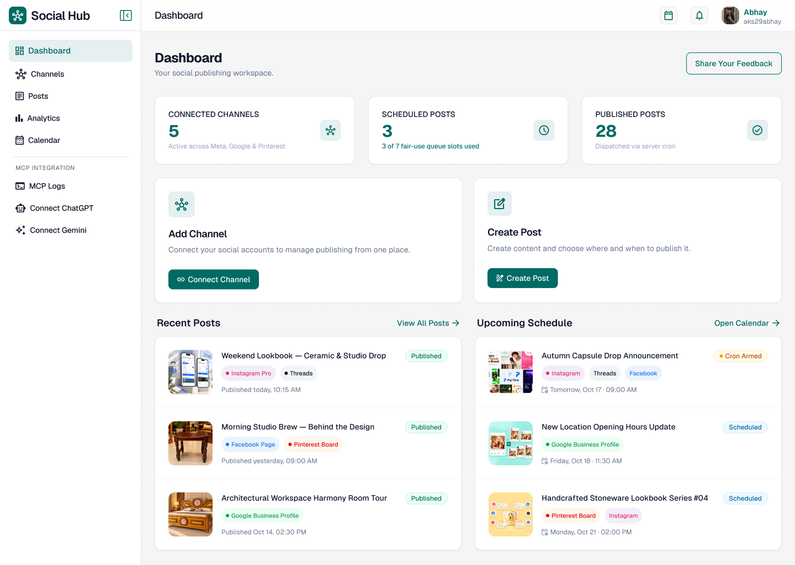
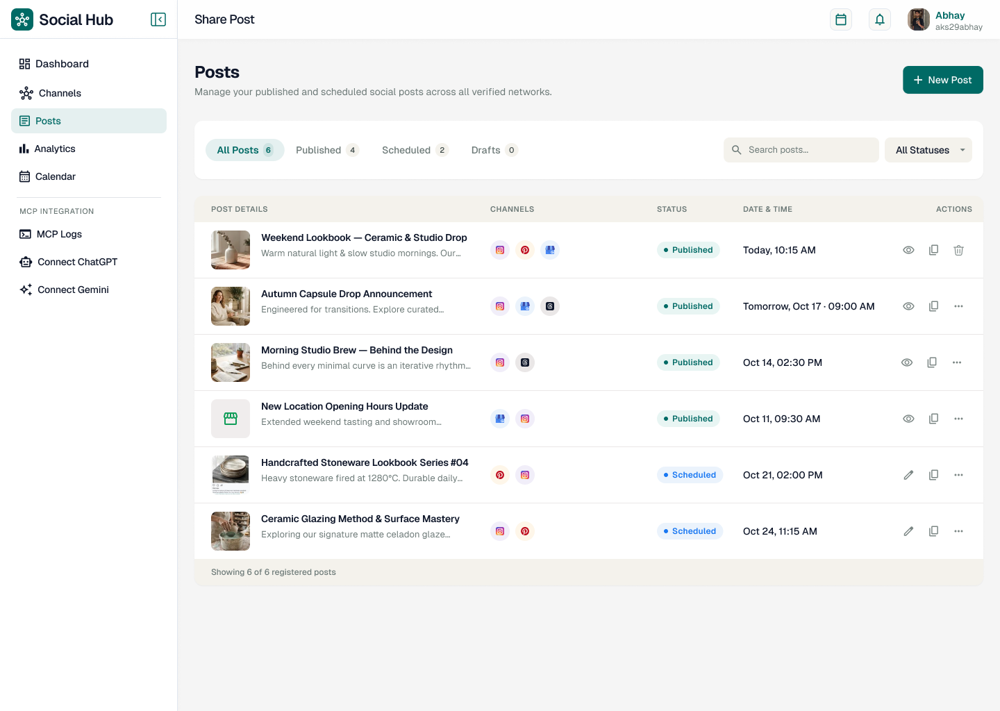

Social media management has a strange tax: the content may take ten minutes, but distributing it can consume the afternoon.
SocialHub was built to remove that tax—not add another complicated dashboard.
A typical business publishes the same idea to Instagram, Facebook, Threads, Pinterest, and Google Business Profile. Yet each platform has a different authorization flow, destination model, caption style, media rule, and publishing API. Copy-paste looks simple until it becomes someone’s daily job.
VitableTech SocialHub turns that fragmented process into one workflow: connect, discover, create, review, schedule, and dispatch.

Watch SocialHub in Action
See how the dashboard, post composer, channel selection and scheduling workflow come together before exploring the architecture below.
The product rule: simplify the workflow, not the platforms
We did not pretend every network is identical. SocialHub keeps a shared campaign at the center, then maps it to platform-specific destinations and rules. That distinction prevents the data model from becoming a giant collection of nullable fields.
The creative idea, base caption, media and intended publishing window.
One platform account, page, board or location with its own status and result.
Encrypted authorization plus discovered destinations and expiry metadata.
A limited review link that lets a client inspect a draft without dashboard access.
1. OAuth should discover the boring details
Asking a user to find a Facebook Page ID or type a Google Business location name is an invitation to make errors. After authorization, SocialHub discovers available Pages, Instagram Professional profiles, Threads accounts, Pinterest boards, and Google Business locations. The user chooses from verified destinations instead of copying identifiers between tabs.
connect(platform)
→ redirect to official authorization
→ exchange short-lived authorization code
→ encrypt refresh/access credentials
→ fetch available destinations
→ let the user select where publishing is allowedThe browser starts authorization, but token exchange, encryption and publishing happen on the server. Never expose social API secrets in client-side JavaScript.
2. One composer needs multiple voices
A useful AI assistant should not spray the same caption everywhere. It should preserve the central idea while adapting length, structure, hashtags, calls to action, and tone. Users still approve the final text; AI reduces blank-page work rather than becoming an invisible publisher.
.png)
Input: product launch + target audience + key benefit
Instagram → visual hook, readable spacing, relevant hashtags
Threads → conversational thought and reply prompt
Pinterest → search-friendly title and description
Facebook → context, community voice and clear action
Google → factual local update with business intent3. The seven-slot queue makes “free” operationally honest
The hosted release uses a transparent fair-use rule: up to seven active destination sends. One campaign sent to seven channels uses seven slots; seven single-channel posts also use seven. Slots reopen as deliveries finish. This maps pricing language to real infrastructure instead of hiding throttling behind vague limits.
The visual calendar shows what is planned, what dispatched, and which queue capacity remains. Drag-and-drop changes a schedule; it does not publish from the browser.

4. Reliable publishing belongs to a server worker
A user can close the laptop immediately after scheduling. The server still needs to publish at the promised time, handle token refresh, avoid duplicate sends, retry temporary errors, and record a useful failure reason.
every minute:
claim due jobs atomically
mark each job as processing
refresh authorization when required
call the platform adapter with an idempotency key
store remote post ID + delivery timestamp
retry only transient errors with backoff
release the active queue slotAtomic claiming matters. If two workers see the same scheduled row, only one may own it. An idempotency key gives the adapter another layer of duplicate protection.
5. Temporary uploads are a product feature
SocialHub removes uploaded images and videos from its servers 48 hours after a scheduled post is published. The published post remains on the destination platform. Short retention reduces storage pressure and limits the amount of customer media kept on the application server.
The cleanup worker should delete the file and its derived previews, record the cleanup time, and tolerate already-missing objects. Never delete media that still belongs to a pending retry.
6. Client approval should not require another account
Agencies lose time when every reviewer needs a seat, password, onboarding call, and dashboard lesson. Tokenized preview links let a client review the exact media, caption, destinations, and schedule. Tokens should be random, scoped to one draft, revocable, and time-limited. Approval events need an audit timestamp without exposing social credentials.
.png)
What the hosted release supports today
- ✓ Direct sign-in for Instagram, Facebook, Threads, Pinterest and Google Business Profile
- ✓ Automatic destination discovery
- ✓ Multi-channel server-cron dispatch
- ✓ Visual scheduling, analytics and post metrics
- ✓ Client approval review links
- ✓ AES-encrypted credentials at rest and HTTPS transport
- ✓ Seven active scheduled sends and 48-hour completed-media retention on the free tier
X, LinkedIn, longer retention and higher-capacity queues are roadmap items—not current direct-connect features in the hosted release.
Copy-ready AI prompt: build your own social scheduler
Build a production-ready multi-platform social media scheduler. First inspect the existing repository, framework, authentication, database, storage and deployment environment. Preserve existing functionality and follow the project’s conventions.
Core workflow:
1. Users connect supported social platforms through official OAuth authorization-code flows. Keep client secrets and token exchange server-side. Encrypt stored access and refresh credentials at rest.
2. After connection, automatically discover destinations such as Facebook Pages, Instagram Professional accounts, Threads accounts, Pinterest boards and Google Business locations. Never require users to type platform IDs manually.
3. Model a campaign separately from destination sends. Each destination send must have its own normalized status: draft, awaiting_approval, scheduled, processing, published, retrying, failed or cancelled.
4. Build a visual calendar and composer. Allow one base idea to produce editable platform-specific captions. AI suggestions must remain drafts until a human approves them.
5. Add tokenized, revocable and expiring client-preview links. Reviewers can approve or request changes but cannot access OAuth credentials or the full dashboard.
6. Publish from a server-side queue worker, never from the browser. Atomically claim due jobs, use idempotency keys, refresh tokens safely, apply exponential backoff only to transient failures and record remote post IDs.
7. Enforce a configurable active-destination queue limit. Show users exactly how many slots a campaign consumes.
8. Store uploaded media temporarily. After a published job passes the configurable retention window, remove source files and previews. Do not delete media needed by pending retries.
9. Add structured logs, delivery audit events, rate limiting, CSRF/state validation, least-privilege OAuth scopes, credential rotation, accessible UI and mobile layouts.
10. Write adapter contracts and mocked integration tests for every platform. Do not invent API endpoints or claim a platform is supported unless its official publishing flow is implemented and tested.
Deliver the database schema, API routes, queue worker, adapter interface, security model, responsive UI, tests, deployment notes and environment-variable documentation. Run lint, tests and the production build, then report changed files and remaining platform-review requirements.The real lesson: convenience is an infrastructure problem
“Post everywhere” sounds like a button. Behind that button are five authorization systems, several destination types, media lifecycles, scheduling guarantees, retries, audit events, and human approvals. A good product hides this complexity from the user without pretending it does not exist.
SocialHub succeeds when the dashboard feels quiet—even while the server is doing the noisy work.
Explore SocialHub